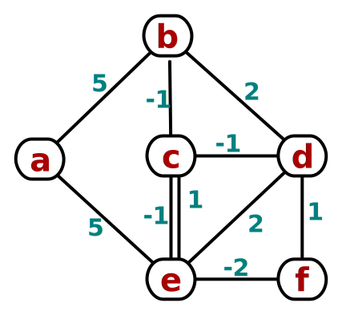
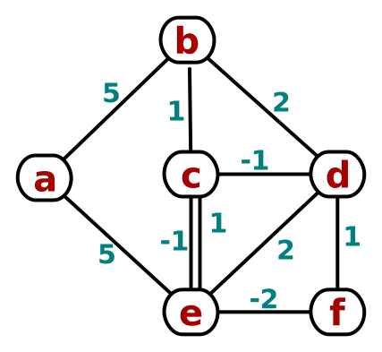

Exam Policies
|
|
- Where there is a choice, consider vertices in alphabetical order, and edges in lexicographic order of endpoints.
- Please show as much work as you can.
- If you feel a question is ambiguous, write on your exam sheet your interpretation of the question, and answer accordingly.
- Please label/number your pages clearly and staple them in order when handing in.
Final exam [110 pts; counted out of 100] ###
- (3 pts)
Say you are sorting an array that is nearly pre-sorted:
e.g., only one element is out of place.
Which sorting algorithm (of the ones we learned)
would be most appropriate? Why?
Insertion sort can do this in `O(n)`
- (3 pts)
Assume a database with a table of millions of users, where each user has a
unique 32-bit ID number. You wish to sort by ID number.
Which sorting algorithm (of the ones we learned)
would be most appropriate? Why?
Radix sort, since the values to be sorted are of a fixed bit length
- (6 pts) Prove from definition:
`10 n^2 log n + O(n log^2 n) = O(n^2 log n)`
Let `f(n) in O(n log^2 n)`. So `exists c_1, n_1 > 0` such that `f(n) <= c_1 n log^2 n, forall n > n_1`.
Let `c_2 = 10 + c_1`.
Then `10 n^2 log n + f(n)` `<= 10 n^2 log n + c_1 n log^2 n` (property of `f`)
`<= 10 n^2 log n + c_1 n^2 log n` (since `log n < n`)
`= (10 + c_1) n^2 log n` `= c_2 n^2 log n, forall n > n_1` - (6 pts)
Let `F_0 = F_1 = 1, and F_n = F_(n-2) + F_(n-1), forall n > 1`.
Let `phi = (1+sqrt 5)/2 ~~ 1.62`, such that `phi^2 = phi + 1`. Prove by induction: `F_n <= phi^n`Base case: `F_0 = 1 = phi^0`, and `F_1 = 1 <= 1.62 ~~ phi^1`.
Inductive step: `F_n = F_(n-2) + F_(n-1)` (the given recurrence)
`<= phi^(n-2) + phi^(n-1)` (by inductive hypothesis)
` = phi^(n-2)(1+phi)` (factoring out `phi^(n-2)`)
` = phi^(n-2) phi^2` (property of `phi`)
` = phi^n`. - (4 pts) Solve the recurrence:
`T(n) = 4T(n/2) + n^2 log_2^2 n`
Master method with `a=4, b=2, and f(n)=n^2 log_2^2 n`:
Apply polylog extension with `f(n)=n^(log_b a) log^k n and k=2`:
Solution is `T(n) = Theta(n^(log_b a) log^(k+1) n) = Theta(n^2 log_2^3 n)` - (8 pts) Demonstrate heap sort:
[ F, L, B, C, M, X, D, V, T, S ] - (4 pts)
Suppose we have a partitioning scheme, called
LopsidedPart, for Quicksort.LopsidedPartcan perform a partition in `O(n)` time, but can only guarantee that the smaller portion is at least 1/10-th of the array. What is the worst-case complexity of Quicksort usingLopsidedPart? Why?`O(n log n)`
- (4 pts)
Prove or disprove: counting sort
on a list of `n` integers runs in `O(n)` time.
FALSE: counting sort's running time depends on the space of possible values being sorted. If this space is all integers `ZZ`, then the census array (and hence the running time) can be arbitrarily large. E.g., sorting `[ 0, 2, 1, 10^6 ]` requires a census with at least a million entries. Any implementation necessarily will have a limit on the range of possible values.
- (6 pts)
Is deletion in a binary search tree
commutative?
I.e., do "Delete(X); Delete(Y)" and "Delete(Y); Delete(X)"
always result in the same tree?
Prove or give a smallest counterexample.
Assume deletion uses successor.
FALSE: consider the BST with pre-order
BADC:
-A -Bresults inDC, but
-B -Aresults inCD - Demonstrate inserting the following in order.
If insertion fails, just note it.
[ 10, 15, 12, 14, 1, 13, 4, 17, 8, 9 ]- (3 pts) a hash table of size `m=11` with division hash and chaining
- (3 pts) a hash table of size `m=11` with division hash and linear probing
- (3 pts) a hash table of size `m=11` with division hash and quadratic probing (`c_1=1, c_2=1`)
- (4 pts) a hash table of size `m=11` with double-hashing using `h_1` as division hash and `h_2(k) = 5-(k mod 5)`
- (3 pts) a binary search tree
- (6 pts) a B-tree with `t=2` (pre-emptive split/merge, as in lecture)
- (2 pts) Now, delete 13 from the B-tree.
- You are managing a large youth-sports database; each participant
is assigned one of nine team colours.
The list of colour assignments is very long, and you would like to
compress it. The colours and relative frequencies
are given below:
R O Y G B I V W K 28% 6% 4% 16% 26% 2% 8% 3% 7% - (6 pts) Construct a Huffman tree to encode these colours efficiently, following the pseudocode in lecture.
- (4 pts) Derive the compression ratio
relative to fixed-length encoding.
To encode 100 symbols: 2(26+28) + 3(8+16) + 4(4+6+7) + 5(2+3) = 273 bits.
Fixed-length (`|~ log_2 9 ~|` = 4 bits per symbol): 400 bits.
Compression ratio: 400/273 = 1.4652.
(File size: 273/400 = 68.25%, savings = 1-273/400 = 31.75%)
-
You are a wedding planner, deciding the guests'
seating arrangement.
For each guest `u`, you have a list of which other guests `v`
are known by `u`.
Assume commutativity;
i.e., if `u` knows `v`, then `v` also knows `u`.
We wish to ensure that each guest in a table knows every other
guest at the table, either directly or indirectly
(via a series of intermediate friends).
- (6 pts) Describe (pseudocode) an efficient
algorithm to minimise the number of tables
needed while meeting this constraint.
If guests are vertices, and relationships are edges, then the problem is just the connected component problem on an undirected graph, which can be solved by two runs of DFS.
- (2 pts) Analyse the complexity
of your algorithm.
`O(|V| + |E|)`
- (6 pts) Describe (pseudocode) an efficient
algorithm to minimise the number of tables
needed while meeting this constraint.
- (4 pts)
Recall that depth-first search is `Theta(V+E)`
when using adjacency lists.
What is its running time if an adjacency matrix is used instead?`Theta(V^2)`, the size of the adjacency matrix
- (10 pts)
In the left-hand graph below, demonstrate
Bellman-Ford for shortest paths from
the source `a`:
 - Pass 1: a:0, b:5, c:4, d:7, e:5, f:8
- Pass 2: a:0, b:3, c:4, d:7, e:5, f:8
- Pass 3: a:0, b:3, c:4, d:5, e:4, f:6
- Pass 4: a:0, b:3, c:3, d:5, e:4, f:6
- Pass 5: a:0, b:2, c:3, d:5, e:4, f:6
- Pass 6: a:0, b:2, c:3, d:4, e:3, f:5
Since the shortest-path estimates keep changing even after `|V|-1 = 5` iterations, we observe there is a negative-weight loop (b, d, f, e, c) of net weight -1.
- (10 pts)
The right-hand graph above is the same except
`w(c,b)=1`. Demonstrate Floyd-Warshall for
all-pairs shortest paths on the right-hand graph.
Show the `D` matrix after each iteration `k`.
- Original adjacency matrix:
`((0, 5, oo, oo, 5, oo), (oo, 0, oo, 2, oo, oo), (oo, 1, 0, oo, 1, oo), (oo, oo, -1, 0, oo, 1), (oo, oo, -1, 2, 0, oo), (oo, oo, oo, oo, -2, 0))` - At k=2, by routing through `{a,b}`, we can get from
`a` to `d` in weight 7, and from `c` to `d` in weight 3:
`((0, 5, oo, 7, 5, oo), (oo, 0, oo, 2, oo, oo), (oo, 1, 0, 3, 1, oo), (oo, oo, -1, 0, oo, 1), (oo, oo, -1, 2, 0, oo), (oo, oo, oo, oo, -2, 0))` - At k=3, via `{a,b,c}`: change `d_(db)=0, d_(eb)=0`:
`((0, 5, oo, 7, 5, oo), (oo, 0, oo, 2, oo, oo), (oo, 1, 0, 3, 1, oo), (oo, 0, -1, 0, oo, 1), (oo, 0, -1, 2, 0, oo), (oo, oo, oo, oo, -2, 0))` - At k=4: `d_(ac)=6, d_(af)=8, d_(bc)=1,
d_(be)=2, d_(bf)=3, d_(cf)=4, d_(ef)=3`:
`((0, 5, 6, 7, 5, 8), (oo, 0, 1, 2, 2, 3), (oo, 1, 0, 3, 1, 4), (oo, 0, -1, 0, oo, 1), (oo, 0, -1, 2, 0, 3), (oo, oo, oo, oo, -2, 0))` - At k=5: `d_(ac)=4, d_(db)=-1, d_(dc)=-2,
d_(fb)=-2, d_(fc)=-3, d_(fd)=0`
`((0, 5, 4, 7, 5, 8), (oo, 0, 1, 2, 2, 3), (oo, 1, 0, 3, 1, 4), (oo, -1, -2, 0, oo, 1), (oo, 0, -1, 2, 0, 3), (oo, -2, -3, 0, -2, 0))` - At k=6: `d_(be)=1, d_(de)=-1`:
`((0, 5, 4, 7, 5, 8), (oo, 0, 1, 2, 1, 3), (oo, 1, 0, 3, 1, 4), (oo, -1, -2, 0, -1, 1), (oo, 0, -1, 2, 0, 3), (oo, -2, -3, 0, -2, 0))`
- Original adjacency matrix: